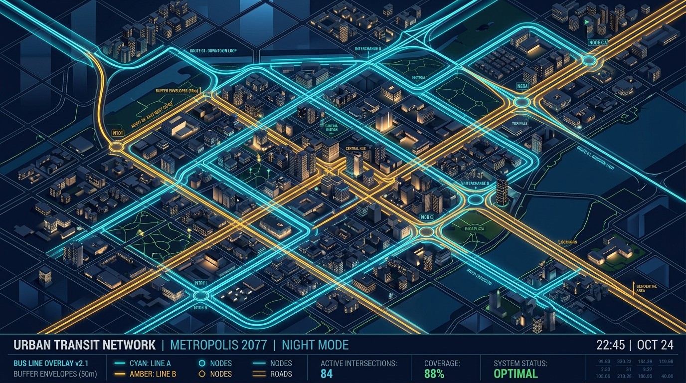

TransitFlow — Smart Scheduling
& Spatial Route Management
Eliminating the operational barrier between crew-to-bus assignments and spatial route planning. A reactive, single-operational-picture engine orchestrating linked & unlinked duties, mandated rest tracking, spatial overlap detection, and automated fallback resolution.
Dual-View Paradigm
Spatial GIS alterations reactively validate crew shift rosters; crew constraints dynamically test route viability.
Linked & Unlinked Duties
Deterministic support for 1:1 locked crew-bus shifts and dynamic interchange hub swaps with 15-min handoff buffers.
PostGIS Overlap Engine
Automated 50m corridor buffer calculations detecting shared road segments and concurrent timetable collisions.
3-Tier Fallback Solver
Automated reserve standby query → duty deconstruction → escalated dispatch lock for zero blind spots.
The Fatal Disconnect in Urban Fleet Management
Traditional transit operators run route planning (GIS teams) and crew scheduling (dispatchers) in isolated software silos. This structural divide creates cascading operational failures.
- × Blind Network Alterations: GIS route modifications occur without knowing if qualified, legally rested drivers exist to staff them.
- × Undetected Route Overlaps: Overlapping bus corridors cannibalize passenger demand and create headways clashes.
- × Post-Publication Rest Violations: Mandated 11-hour driver rest windows are checked via manual spreadsheets after shifts are assigned.
- × 3.8-Hour Roster Resolution Lag: Manual dispatcher phone calls and spreadsheets required to re-assign missing crew.
- ✓ Unified Reactive Operational Picture: Modifying a route vector automatically tests crew shift legality and updates rosters in real time.
- ✓ Automated PostGIS Overlap Detection: Sub-50ms corridor intersection calculations identify shared roads and timetable conflicts.
- ✓ Deterministic Rest Guardrails: Algorithmic validation blocks shift confirmation if driver rest < 11 continuous hours.
- ✓ 3-Tier Automated Fallback: Instant standby auto-assignment or duty deconstruction in < 1.2 seconds.
"A route without an assigned, rested crew is an unviable geometry. A crew without an optimized route is idle deadhead."
Full-Stack Reactive System Architecture
High-performance decoupled layers delivering 60 FPS vector map rendering synchronized with transactional constraint solving.
1. Presentation Layer
React • Deck.gl2. Node.js API & Solver
Fastify / Express3. PostgreSQL 16 + PostGIS
GiST 2D R-TreePostgreSQL + PostGIS Schema Design
Strict transactional modeling of spatial line geometries, crew master records, and duty assignments.
-- 1. Crew Master & Mandated Rest Tracking
CREATE TABLE crew_members (
id UUID PRIMARY KEY DEFAULT gen_random_uuid(),
full_name VARCHAR(255) NOT NULL,
license_number VARCHAR(100) UNIQUE NOT NULL,
max_weekly_hours INT DEFAULT 48,
last_shift_end TIMESTAMP WITH TIME ZONE,
created_at TIMESTAMP WITH TIME ZONE DEFAULT NOW()
);idx_routes_path ON routes USING GIST (path); Enables spatial queries in $O(\log N)$ logarithmic time.
duty_type ('LINKED', 'UNLINKED') and duty_status ('SCHEDULED', 'ACTIVE', 'CONFLICT', 'UNASSIGNED').
CHECK (mandatory_rest_end > end_time) Rejects illegal shift configurations at the storage layer.
Dual Duty Scheduling Engine
Flexible operational scheduling accommodating continuous crew-vehicle locks and multi-bus interchange cycles.
Single crew member locked to a single bus for full shift duration.
Crew switches buses at transit interchange hubs with mandatory 15-min handoff buffer.
Mandated Rest Period Verification
Automated compliance tracking enforcing the statutory 11-hour continuous rest interval between shifts.
function validateRestPeriod(lastShiftEnd, newShiftStart, minRestHours = 11) {
const restMillis = minRestHours * 60 * 60 * 1000;
const actualRest = new Date(newShiftStart) - new Date(lastShiftEnd);
return {
isCompliant: actualRest >= restMillis,
actualRestHours: (actualRest / 3600000).toFixed(2),
deficitHours: actualRest < restMillis ?
((restMillis - actualRest) / 3600000).toFixed(2) : 0
};
}Spatial Vector Overlap Engine
Automatic 50-meter GIS corridor buffer calculations detecting geographic road-sharing and timetable collisions.
SELECT r.id, r.route_code,
ST_Length(ST_Intersection(r.path, ST_Buffer(ST_GeomFromText($1, 4326)::geography, 50)::geometry)) AS overlap_meters,
(ST_Length(ST_Intersection(r.path, ST_Buffer(...)::geometry)) / ST_Length(r.path)) * 100 AS overlap_pct
FROM routes r WHERE ST_Intersects(r.path, ST_Buffer(...)::geometry);
Unified Operational Dashboard
Bidirectional reactive sync: Click any route or duty card to cross-isolate spatial & temporal states.
Operational Summary Analytics
Real-time business intelligence metrics mathematically computed from spatial line geometries and temporal duty logs.
Automated Conflict Resolution Workflow
Multi-tier deterministic fallback logic executing whenever a driver rest violation or crew shortage is detected.
Query Reserve Standby Pool
Queries active reserve crew with valid rest (last_shift_end ≥ 11h) and zero concurrent duty assignments.
Split to Unlinked Shift
If no single driver can cover the full 8h shift, the engine splits the Linked shift into an Unlinked Duty at an interchange hub.
System Lock & Alert
If all automated fallbacks fail, duty drops to UNASSIGNED_CONFLICT, triggering emergency dispatch broadcast.
Edge Case Governance & Resiliency
Pre-configured deterministic handling of real-world urban transit disruptions and operational friction.
| Operational Edge Case | Detection Mechanism | Automated System Mitigation | Fail-Safe State |
|---|---|---|---|
| 1. Driver Traffic Overrun (Shift Delay) | GPS telemetry exceeds scheduled end time | Automatically advances next day's shift start time to preserve 11h rest | Zero Rest Penalty |
| 2. Interchange Hub Road Blockage | PostGIS dynamic polygon exclusion zone | Redirects unlinked 15m handoff to nearest secondary hub node | Rerouted Handoff |
| 3. Standby Pool Exhaustion | Reserve pool SQL count = 0 | Automated duty splitting into unlinked shifts across part-time roster | Shift Deconstruction |
| 4. Corridor Headway Bunching Overlap | PostGIS > 50% shared road length + concurrent hours | Staggers scheduled departure headways by ± 7.5 mins to prevent bus bunching | Headway De-confliction |
| 5. Vehicle Breakdown Mid-Route | Fleet status toggled to 'MAINTENANCE' | Converts active linked duty to unlinked with depot replacement unit | Fleet Replacement Swap |
Implementation Roadmap & Impact
Structured 16-week phased deployment delivering immediate operational efficiency and regulatory certainty.
Spatial Engine & Schema
PostGIS setup, LineString vector storage, GiST indexing, ST_Buffer/ST_Intersection microservice.
Dual Duty & Rest Solver
Linked/Unlinked duty solver, 11-hour rest validator, interchange 15-min handoff buffer check constraints.
Unified Dual Dashboard
Deck.gl vector map drawing editor + Redux virtualized Gantt timeline with bidirectional event sync.
Fallback & Fleet Pilot
3-tier fallback automation, WebSocket live alerts, enterprise fleet integration & dispatcher training.
Production-grade architecture with PostgreSQL 16 + PostGIS & React.js.